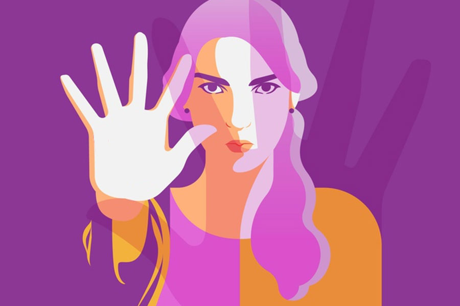
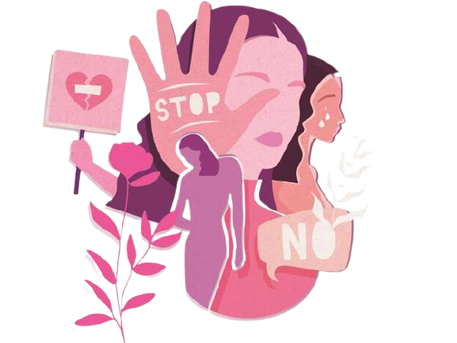

☰
PROGRAMA DE ERRADICACIÓN DE VIOLENCIA HACIA LAS MUJERESDurante el mes de agosto de 2019 las colectivas y organizaciones feministas manifestaron su reclamo sobre los actos de violencia contra las mujeres, exigiendo su erradicación en todas sus modalidades y reivindicando su derecho a una vida libre de violencia. En respuesta a sus peticiones se realizaron dos mesas de diálogo con mujeres feministas y la Jefa de Gobierno de Ciudad de México, mismas que detonaron sesiones de consulta, participación y retroalimentación con la entonces Procuraduría General de Justicia, la Secretaría de las Mujeres y otras dependencias del Gobierno de la ciudad en materia de prevención, atención, sanción y erradicación de la violencia. El 28 de agosto el Gobierno de Ciudad de México presentó el Plan de Acciones Inmediatas de Atención a la Violencia Contra las Mujeres, en cuya instrumentación participaron diversas dependencias de la administración pública local. Con esto se responde a las diversas demandas expresadas en las mesas de diálogo, para generar una agenda integral que garantice una vida libre de violencia para todas las niñas y mujeres. El compromiso del Gobierno de la ciudad se expresa en una serie de acciones realizadas en el periodo de este informe de gobierno:
LUNAS: Unidades Territoriales de Atención y Prevención Las Lunas son espacios de atención integral para las mujeres. En este momento, se cuenta con 27 en las 16 alcaldías, donde se brinda atención psicológica y legal a las mujeres que lo solicitan. Se busca generar procesos de reflexión y empoderamiento de las mujeres, adolescentes y niñas para superar las barreras que les impiden tomar decisiones para salir de situaciones de violencia y mejorar sus vidas y las de sus hijos e hijas.
Del 1 de agosto del 2019 al 31 de julio de 2020, se atendieron a 71,036 personas (69,559 mujeres y 1,477 hombres) y se brindaron 83,399 servicios entre atención inicial, asesoría jurídica y atención psicológica.
Apoyo a mujeres en situación de violencia de género Las Lunas son espacios de atención integral para las mujeres. En este momento, se cuenta con 27 en las 16 alcaldías, donde se brinda atención psicológica y legal a las mujeres que lo solicitan. Se busca generar procesos de reflexión y empoderamiento de las mujeres, adolescentes y niñas para superar las barreras que les impiden tomar decisiones para salir de situaciones de violencia y mejorar sus vidas y las de sus hijos e hijas.Con este programa se ofrecen recursos para las mujeres que se encuentran en alto grado de riesgo de violencia. El objetivo es ayudarlas para que inicien un proceso de autonomía económica y familiar. Durante 2019, a las mujeres en alto riesgo de violencia se les otorgó un apoyo mensual de $1,500.00 más el pago de un seguro de vida —aplicable en muerte accidental o pérdidas orgánicas— durante seis meses. De enero a diciembre del 2019, se incorporaron 2,195 beneficiarias al programa, de las cuales, 2,096 terminaron sus procesos psicológicos. A partir de la evaluación del programa, en enero de 2020, se incrementó el apoyo para que las mujeres en alto riesgo de violencia —riesgo feminicida o violencia recurrente— se alejen del agresor. El apoyo mensual es de $3,690.00, equivalente a un salario mínimo. De manera complementaria, se da acompañamiento a estas mujeres por medio de terapia psicológica, asesoría jurídica y trabajo social. Este proceso de acompañamiento promueve la elaboración de un plan de vida personal que les posibilite obtener su autonomía física y económica. Con un presupuesto de $6,514,796.00 pesos entre enero y abril del año en curso, se apoyaron 875 mujeres. Línea Mujeres La Línea Mujeres fue establecida para proporcionar un primer contacto de orientación, intervención y respuesta inmediata para la prevención y atención de violencia contra las mujeres. Funciona las 24 horas del día, los siete días de la semana, y ofrece información y orientación a las mujeres que lo solicitan. En caso necesario, a través de la línea telefónica, se brinda asesoría jurídica y psicológica inmediata; se establece, además, el contacto referencial a las distintas áreas de Gobierno de la entidad. De agosto de 2019 a julio de 2020, se atendieron a 22,782 personas (13,502 mujeres y 9,280 hombres), a quienes se les brindaron 22,154 servicios especializados entre atención psicológica y jurídica. Red de Mujeres por la Igualdad y la No Violencia La Red de Mujeres por la Igualdad y la No Violencia es una estrategia de trabajo territorial implementada en 2019, con el objetivo de promover procesos organizativos y participativos de mujeres en la modalidad de multiplicadoras. La red la integraron 212 coordinadoras zonales y 2,596 mujeres impulsoras que habitan en las 16 alcaldías, quienes fueron acompañadas por 43 profesionales en la promoción del ejercicio y exigibilidad de los derechos de las mujeres. De enero a diciembre de 2019, la Red realizó 6,672 acciones, impactando a 280,817 personas (271,483 mujeres y 9,334 hombres). Red de Jóvenes por la Paz y la No Violencia La desigualdad, el acoso, la violencia y discriminación que viven cotidianamente las mujeres en todos los ámbitos es producto del modelo de masculinidad hegemónica, que se manifiesta en el plano familiar, en las relaciones interpersonales y el ámbito comunitario. Para lograr un cambio profundo es imprescindible incidir en la reelaboración de masculinidades basadas en el respeto a los derechos humanos. Para facilitar procesos organizativos para que hombres y mujeres jóvenes se involucren en la construcción de la igualdad de género y una cultura del buen trato, se creó la Red de Jóvenes por la Paz y la No Violencia. La reflexión conjunta de las y los jóvenes acerca de roles hegemónicos, masculinos y femeninos, se fomenta por medio de actividades de capacitación y sensibilización. Del 1 de agosto de 2019 al 31 de marzo del 2020, se llevaron a cabo diversas acciones en las que participaron 55,795 personas jóvenes (30,301 mujeres y 25,494 hombres). Grupo de Prevención del Embarazo en Adolescentes de Ciudad de México Este grupo tiene el objetivo de reducir el número de embarazos en adolescentes por medio de la promoción de actividades culturales, programas de difusión y espacios de discusión que informan y sensibilizan a la población. Del 1 de agosto de 2019 al 31 de mayo del 2020, 38,560 personas participaron en las actividades organizadas en las 16 alcaldías. Con asistencia de 22,069 mujeres y 16,491 hombres, se realizaron 314 cine debates, 84 brigadas de difusión, 77 mesas informativas, 299 pláticas, 29 jornadas y tres talleres. Acceso a la Justicia para las mujeres víctimas de violencia De acuerdo con la Encuesta Nacional sobre la Dinámica de las Relaciones en los Hogares (ENDIREH) 2016, 78.6% de las mujeres que han vivido violencia de diversos tipos no presenta su denuncia ante las autoridades por miedo a las represalias. Un obstáculo adicional que encuentran cuando buscan acceso a la justicia es la violencia institucional que se expresa en la actitud de personas funcionarias públicas que cuestionan la veracidad de la exposición de hechos o les restan importancia a las denuncias. El Gobierno de la ciudad desarrolla una estrategia integral para agilizar la procuración de justicia de mujeres y niñas víctimas de violencia de género. La estrategia consta de tres programas:
Abogadas de las Mujeres en las Agencias del Ministerio Público Una de las primeras acciones del Gobierno de la ciudad fue crear una Red de Abogadas de las Mujeres con el propósito de orientar y acompañar a las mujeres que acuden a presentar una denuncia por violencia de género. Su presencia en los Ministerios Públicos garantiza la adecuada asesoría y apoyo legal a la denuncia de violencia sexual y familiar. Las abogadas proporcionan información sobre sus derechos y las asesoran en sus alternativas jurídicas; están presentes en 71 agencias desconcentradas y ocho agencias especializadas del Ministerio Público de 8:00 a 21:00 horas los 365 días del año; además, proporcionan atención telefónica nocturna a partir de las 20:00 horas hasta las 9:00 horas del día siguiente. A partir de la emergencia sanitaria provocada por el sars-CoV-2, el 23 de marzo 2020 se modificó el servicio para garantizar atención continua a mujeres en situación de violencia:
Del 1 de agosto al 31 de julio 2020, se atendieron 49,954 mujeres víctimas de violencia de género. Con la orientación jurídica, se iniciaron 12,045 carpetas de investigación, de las cuales, en 7,736 casos, se realizó la representación legal ante el Ministerio Público para el inicio de las carpetas de investigación. Protección de emergencia para mujeres y niñas víctimas de violencia de género Las medidas de protección están vinculadas al sistema de procuración y administración de justicia. Para hacerlo efectivo, se creó un grupo especializado de abogadas de las mujeres que atiende exclusivamente las medidas de protección. Su función es orientar, acompañar y realizar la representación jurídica y los trámites necesarios ante las autoridades judiciales competentes. Solicitan órdenes y medidas de protección a mujeres víctimas de violencia de género, cuya seguridad física o psíquica se encuentre en riesgo. Del 1 de agosto de 2019 al 31 de julio de 2020, se atendieron 845 mujeres, mediante asesoría y orientación jurídica. A 192 de ellas, se les tramitó la solicitud de medidas de protección de emergencia, de las cuales, se concedieron 191. A fin de dar continuidad a este servicio durante la emergencia sanitaria, partir del mes de mayo de 2020, las medidas de protección de emergencia se tramitan a través de medios electrónicos. Espacios de Refugio para mujeres, sus hijas e hijos en situación de violencia extrema La violencia extrema contra las mujeres, niñas y niños, que pueden llevar a la muerte, obliga al Gobierno a brindar todas las medidas necesarias para su protección, por tal motivo, se cuenta con espacios de refugio para proporcionar seguridad inmediata a las mujeres en riesgo alto de violencia. La Casa de Emergencia y el Refugio, son espacios seguros, temporales, confidenciales y gratuitos que ofrecen servicios especializados con atención integral y multidisciplinaria para dar apoyo emocional a las mujeres víctimas de violencia, sus hijas e hijos. Con el fin de apoyar su reincorporación a una vida digna y sin violencia, la Casa de Emergencia y el Refugio proporcionan servicios y actividades que favorecen la autonomía física y económica de las mujeres alojadas. Estos espacios funcionan las 24 horas del día y los 365 días del año. Del 1 de agosto de 2019 al 31 de julio de 2020, se atendieron 621 personas (286 mujeres, 179 niñas y 156 niños). Durante este periodo se ofrecieron 35,158 servicios distribuidos de la siguiente manera: 9,300 de trabajo social, 2,853 de psicología, 9,880 de medicina, 80 de psiquiatría, 1,814 jurídicos, 1,782 de psicología infantil, 3319 de nutrición y 6,130 de ludoteca. La atención en los espacios de refugio no ha cesado durante el periodo de confinamiento: desde el inicio de la contingencia sanitaria por la Covid-19, los espacios de refugio han brindado atención las 24 horas del día, con las medidas sanitarias correspondientes. Red de Información de Violencia contra las Mujeres Las políticas de prevención y atención a la violencia contra las mujeres y niñas requieren de información precisa y confiable para la toma de decisiones. Históricamente, hemos padecido de la insuficiencia de estadísticas con perspectiva de género. La recolección de datos es dispersa, heterogénea y tiene vacíos sobre dónde, quién y qué tipos de violencia se cometen contra mujeres y niñas en la entidad. La Ley de Acceso de las Mujeres a una Vida Libre de Violencia establece la creación de la Red de Información de Violencia contra las Mujeres, bajo la coordinación de la Secretaría de las Mujeres. Un punto de partida para hacer efectiva la Ley es el levantamiento de la Cédula de Registro Única (CRU). Este expediente único permite identificar el nivel de riesgo que viven las mujeres y canalizarlas, de manera oportuna, a los servicios que requieren en cada caso. Este registro es un mecanismo que ayuda a prevenir posibles feminicidios. La CRU apoya la entrega-recepción del aviso digital al Ministerio Público, de acuerdo con la Norma Oficial Mexicana-046. La Red opera desde julio de 2018 y se alimenta con registros de las 16 alcaldías y de ocho dependencias de Gobierno: Secretaría de Inclusión y Bienestar Social, Secretaría de las Mujeres, Secretaría de Salud, Procuraduría General de Justicia, Sistema para el Desarrollo Integral de la Familia, Consejería Jurídica y de Servicios Legales, Secretaría de Trabajo y Fomento al Empleo y Secretaría de Seguridad Ciudadana. Durante el periodo comprendido del 1 de agosto de 2019 al 31 de julio de 2020, se registraron 23,921 mujeres y niñas en situación de violencia en Ciudad de México, en la plataforma de la Red de información. Declaratoria de alerta de violencia contra las mujeres en Ciudad de México Con el fin de realizar acciones contundentes que permitan garantizar la seguridad y los derechos de las mujeres, niñas y adolescentes que habitan o transitan la ciudad, así como visibilizar la violencia de género y transmitir un mensaje de cero tolerancia, el 25 de noviembre de 2019 se publicó en la Gaceta Oficial el Decreto por el que se emite la Declaratoria de Alerta por Violencia contra las Mujeres en la Ciudad de México (davm). Esta decisión coloca en el plano de máxima prioridad las acciones que el Gobierno de Ciudad de México implementa para garantizar la seguridad y los derechos de las mujeres, niñas y adolescentes en la ciudad. La davm enuncia 11 acciones de emergencia emprendidas por el Gobierno de la ciudad y establece la formación del Grupo Interinstitucional y Multidisciplinario, cuya función es dar seguimiento a las medidas decretadas, así como tomar las decisiones conducentes para atender la emergencia. Acciones de emergencia decretadas y sus avances Iniciativa de ley para la creación del Registro Público de Agresores Sexuales. Exhorto al Congreso de Ciudad de México. Fortalecimiento de las Unidades Territoriales de Atención y Prevención de la Violencia de Género (Lunas). Certificación a ministerios públicos, asesores jurídicos y peritos en la atención de mujeres víctimas de violencia. Incremento del número de senderos seguros del programa Camina Libre, Camina Segura. Fortalecimiento de las acciones del programa Viajemos Seguras y Protegidas en el transporte público y por plataformas. Mejora de los espacios físicos y de atención a mujeres en la procuración de justicia para una atención más rápida, cálida y digna. Establecimiento de una estrategia de formación integral de cuerpos policiales con perspectiva de género y de derechos humanos. Conformación de una auditoría social de procesos en materia de procuración de justicia. Creación de la Unidad Especializada de Género en la Secretaría de Seguridad Ciudadana para la atención integral y oportuna de delitos cometidos en contra de las mujeres. Generación de campañas masivas para visibilizar y sensibilizar a la sociedad respecto del problema de la violencia hacia las mujeres. Erradicar la violencia en el transporte público El Plan de Género y Movilidad tiene por objetivo brindar seguridad, libertad y comodidad al desplazamiento de las mujeres en la vía y el transporte público. Con el objetivo de reducir los casos de violencia sexual y agresiones en los viajes por medio del fortalecimiento de los mecanismos de protección a las mujeres, se creó el “Protocolo de respuesta efectiva ante casos de violencias sexuales hacia las mujeres dentro del Sistema Integrado de Transporte”. Este protocolo facilita también la homologación de los espacios exclusivos para mujeres en los sistemas de transporte público Metro y Metrobús. El siguiente paso será ponerlo en marcha dentro del Sistema Integrado de Transporte de Ciudad de México, para brindar atención rápida y efectiva a las víctimas. Se ha puesto espacial énfasis en mejorar la infraestructura del transporte público para reducir la violencia contra las mujeres mediante varias adecuaciones que incluyen: iluminación de estaciones de transporte público y sus entornos; instalación de cámaras de vigilancia, y reforzamiento de la vigilancia policial dentro de las instalaciones del transporte público. El programa de Monitoreo Integral y Seguridad de Transporte Público vía gps contempla la instalación de 15,000 de cámaras de vigilancia, gps y botones de auxilio en el transporte concesionado. Al 30 de junio de 2020, se han instalado 4,857 aparatos. Programa Senderos Seguros para Ellas El programa “Senderos Seguros para Ellas” consiste en la intervención de cruces peatonales para brindar mayor seguridad a las mujeres. Las actividades de rehabilitación de espacios contemplan el mejoramiento de vialidades, instalación de nuevas luminarias, tratamiento de áreas verdes y rehabilitación del mobiliario urbano, brindando mantenimiento a superficies mayores y caminos de mayor longitud. Se iniciaron los trabajos en mayo de 2020 y, al 31 de julio, se logró un avance de 25%. Se estima que se concluyan estas actividades en diciembre de 2020. Más arte menos violencia en el transporte público Para prevenir la violencia de género en la red de transporte público se llevan a cabo actividades de concientización por medio de representaciones teatrales a bordo de los autobuses de la Red de Transporte de Pasajeros de Ciudad de México. Durante las puestas en escena a bordo de las unidades, se busca visibilizar y erradicar la discriminación, la desigualdad de género y la violencia, así como fortalecer la sana convivencia en el transporte y el espacio público. Las actividades artísticas se llevan a cabo en conjunto con un equipo de 14 personas con experiencia en teatro, a través del programa Jóvenes Construyendo el Futuro. Por medio de la actuación, el programa promueve una cultura de respeto entre todas las personas usuarias. Durante 2019 se llevaron a cabo 731 representaciones teatrales a bordo de las unidades de la red de transporte, cubriendo doce de sus rutas y llegando a un público estimado de 11,098 personas. Actualmente, las actividades de concientización se encuentran suspendidas por la pandemia del SARS-CoV-2. Para mas informacion visita el siguiente:Enlace |

Violencia de genero

Genero

Documentación 
Exposiciones |
| Angelica Noemi Guerrero Piña |